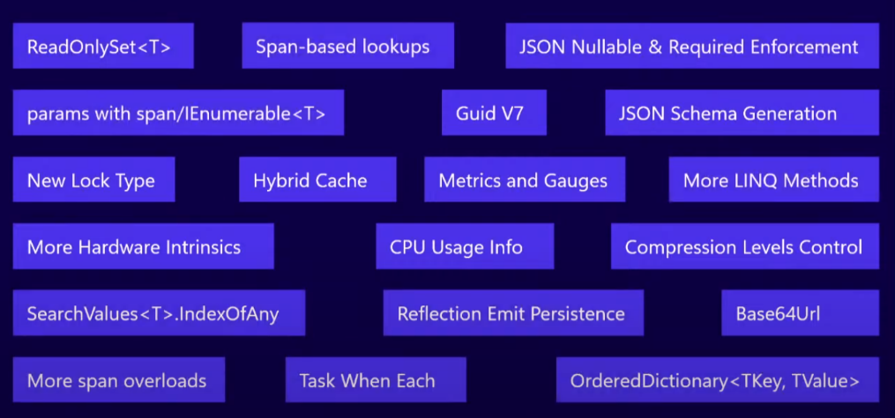
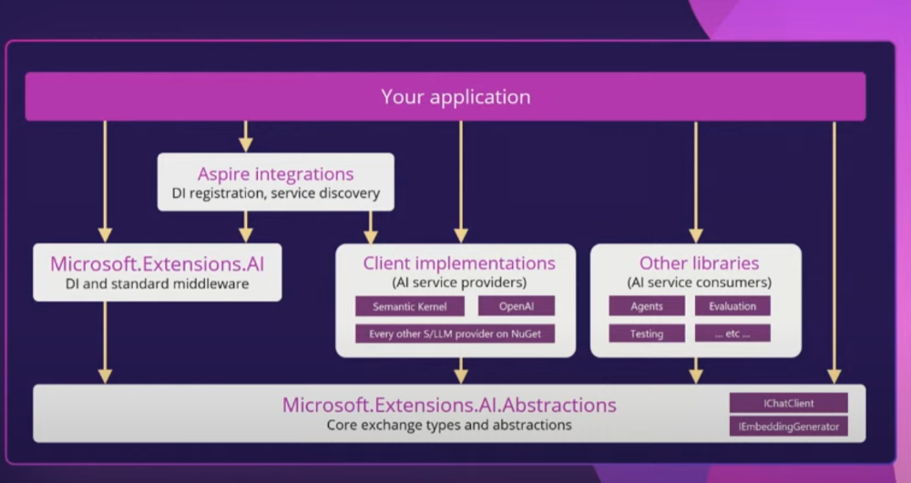

每个.NET版本相关的类库都会更新很多内容，.NET9也不例外。在这篇文章中，我将会介绍一些离开发者更近的一些内容。
性能更新是每个版本的固定内容，.NET9也不例外。但是我不会在这里详细介绍，因为官方的博客中Stephen Toub已经做了详细的介绍，点此查看官方博客。
除了性能的改进，SDK中也更新了一些方法的使用，有的是性能改进，有的是易用性改进，有的是新增的方法，这里也不一一介绍，大家可以参考下图，你可以根据名称再搜索具体的更新内容。

这里我个人比较关注的是Guid V7，它可以根据时间生成有序的Guid，这在使用PostgreSQL和MySQL数据时，生成有序的ID是非常有用的。如果使用的是SQL Server，EF Core之前版本的值生成会自动帮你生成有序的ID。
升级到.NET9，你可以在客户端部分使用Guid V7生成Guid，以保持有序性。
Note
由于EF Core9.0是基于.NET8.0的，所以如果你不显式的在客户端使用Guid V7，那么EF Core9.0并不会自动生成有序的ID，这要等到.NET10.0(SQL Server除外)。
除此之外，还有一些功能上的更新，如
完整的功能更新可以查看官方文档。
对于我个人来说，比较关注ASP.NET Core相关的内容，因为这是我最主要使用的部分。但是在.NET9中，我关注的两个点，都还只是在预览阶段，也有些许问题，以致于无法在生产环境中使用。
HybridCache是一个新的缓存方案，它结合了MemoryCache和DistributedCache的优点，可以在本地缓存和分布式缓存之间进行切换。直接目前还是在预览阶段，之前我在自己的项目模板中集成时，遇到了一些问题，具体问题忘记了，总之，目前不太适合用在生产环境中。
当前我一直使用的是Swashbuckle，遇到的主要问题是在项目接口和模型很多时，每次获取swagger json内容，可能要等待很长时间，大概要20s+。
在.NET9中，官方提供了OpenAPI的集成，同时可以直接使用OutputCache输出缓存来解决上述问题，不需要每次获取swagger json都重新生成。
虽然该类库9.0版本提供了稳定的包，但欠缺了一个十分重要的功能，让我不得不放弃使用它，那就是它目前不支持从XML注释中获取Swagger的描述信息，这就相当于我所有代码中的注释都没有意义了，这是没法接受的，而该功能需要在.NET 10中才会支持。
至于其他的更新，比如Blazor，EntityFramework等，要么是我基本不怎么使用，要么就是什么值得关注的内容，所以这里就不再一一介绍了。
关于语言特性，其他大家可以从官方文档中查看，近两个版本的更新，更多的是易用性上的更新。我相信可能很多开发者连C#12中的特性可能还没怎么用上。在C#12中，有两个语言上的特性，我基本上在代码中已经广泛使用了：
可以直接使用[]来初始化数组，不需要new关键字。
代码示例：
public List<string>? Tags { get; set; } = []; public ICollection<FileData> Files { get; set; } = []; public string[] Names { get; set; } = [];
一开始我对该特性是没有什么感觉的，但在ASP.NET Core中，由于广泛的使用依赖注入，我发现自己的很多类，都可以使用主构造函数来简化代码。简化代码不仅意味着代码行数更少，也意味着，你手动编写代码时花的时间也更少了。
代码示例：
public class CustomerRegisterManager( DataAccessContext<CustomerRegister> dataContext, DingTalkWebhookService dingTalkWebhookService, ILogger<CustomerRegisterManager> logger, CacheService cache, SmsService sms, IUserContext userContext) : ManagerBase<CustomerRegister, CustomerRegisterUpdateDto, CustomerRegisterFilterDto, CustomerRegisterItemDto>(dataContext, logger) { private readonly CacheService _cache = cache; private readonly IUserContext _userContext = userContext; private readonly SmsService _sms = sms; private readonly DingTalkWebhookService _dingTalk = dingTalkWebhookService; }
在有很多要注入的服务时，主构造函数的优势就更加的明显。
C#13中，主要根据设备了params集合，新的Lock类型，模型匹配增加等功能。
完整更新内容可以从官方文档中查看更多的更新内容。
在这次更新中，提到了之前就有提到过的The field keyword，不过还是预览状态，这个更新是有可能会影响到我们的代码风格的，所以我觉得还是值得关注的。
现在我们需要一个back field，用来存储属性的值
public int PageIndex { get => _pageIndex; set { _pageIndex = value; if (value < 1) { _pageIndex = 1; } } }
以后可以省略back field字段，直接使用field关键字
public int PageIndex { set { field = field; if (value < 1) { field = 1; } } }
命令行工具也有所改进，在开发体验有所提升，如：
dotnet publish现在支持http协议的docker registry了。至于MAUI,Blazor,.NET Aspire等相关内容，没有什么特别值得一提的更新，感兴趣的可以自行查找，这里简单概括下：
Fluent UI现在也支持Blazor了微软对AI的支持力度是很大的，这主要体现在：
这一次，微软发布了Microsoft.Extensions.AI.*系列包，为开发者带来更加统一的开发体验。可以通过一张图展示它的作用：

类似于EF Core，微软提供一个统一的接口，其他的大语言模型实现接口，通过provider的形式提供给开发者。
我尝试将我的项目更新到.NET9的，但由于上面说的各种原因，最终我还是将目标框架设置为了NET8，虽然目标框架是.NET8，但仍然可以使用很多9.0的包，它们都兼容.NET8。不过有一个例外：Microsoft.AspNetCore.Authentication.JwtBearer这个包，不兼容.NET8。
能否升级.NET9，一个前提是你依赖的类库都能够支持.NET9，在此前提下，如果你
那么你可以考虑升级到.NET9。
✨ 我的建议是，先安装.NET9 SDK，以享受在cli方面的一些改进，至于项目要不要以.NET9为目标，根据个人情况来定。